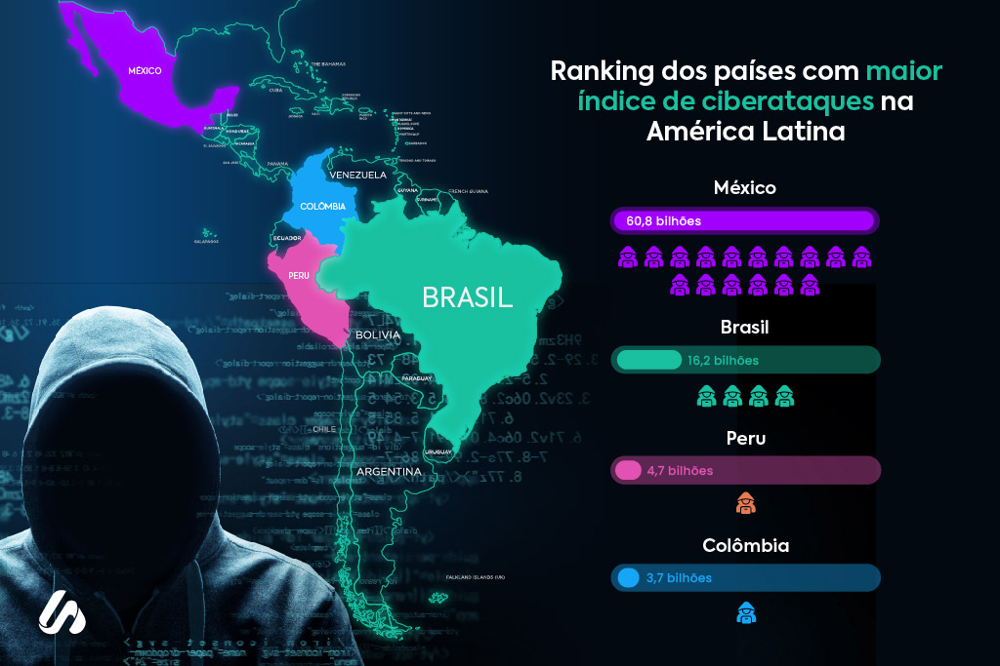

O que são ataques cibernéticos?
Ataques cibernéticos são ações maliciosas realizadas com o objetivo de comprometer sistemas de informação, redes ou dispositivos eletrônicos. Eles podem causar desde a perda de dados pessoais até graves prejuízos financeiros e danos à reputação de indivíduos ou empresas. Com a crescente digitalização de serviços, tornou-se cada vez mais importante entender como esses ataques acontecem e como se proteger contra eles.
Principais Tipos de Ataques em Aplicações Web
1. Injeção de SQL (SQL Injection)
SQL Injection ocorre quando um atacante insere comandos SQL maliciosos em campos de entrada da aplicação, como formulários de login ou busca, para manipular ou acessar ilegalmente o banco de dados.
Como se proteger?
- Utilize prepared statements ou consultas parametrizadas para evitar a injeção de código malicioso.
- Valide e sanitize todas as entradas de usuário antes de utilizá-las em consultas ao banco de dados.
- Utilize ORMs (Object-Relational Mappers) que gerenciem as interações com o banco de dados de forma segura.
2. Cross-Site Scripting (XSS)
Em um ataque XSS, o criminoso injeta scripts maliciosos em páginas web visualizadas por outros usuários, podendo roubar cookies, sessões ou redirecionar para sites perigosos.
Como se proteger?
- Escape corretamente os dados inseridos em páginas web, especialmente em formulários e campos de comentários.
- Utilize Content Security Policy (CSP) para limitar as fontes de execução de scripts.
- Evite o uso direto de entradas de usuários sem tratamento no HTML.
3. Cross-Site Request Forgery (CSRF)
O ataque CSRF força usuários autenticados a executarem ações não intencionais em aplicações web nas quais estão autenticados, como mudanças de senha ou envio de formulários.
Como se proteger?
- Implemente tokens CSRF em todos os formulários e verifique-os no servidor antes de processar requisições.
-
Utilize cabeçalhos HTTP de verificação de origem (como
OrigineReferer). - Reforce a autenticação para ações sensíveis, exigindo re-login ou autenticação de dois fatores.
4. Quebra de Autenticação
Consiste na exploração de falhas em mecanismos de login, como senhas fracas, sessões inseguras ou má implementação de autenticação, permitindo acesso não autorizado a contas e sistemas.
Como se proteger?
- Implemente autenticação multifator (MFA) sempre que possível.
- Exija senhas fortes e implemente limites de tentativas de login.
- Utilize bibliotecas seguras e bem testadas para gerenciar autenticação e sessões.
5. Exposição de Dados Sensíveis
A exposição de dados sensíveis ocorre quando informações confidenciais, como números de cartão de crédito, documentos pessoais ou senhas, são acessadas ou divulgadas sem autorização.
Como se proteger?
- Criptografe todos os dados sensíveis em trânsito (usando HTTPS) e em repouso (com criptografia de banco de dados).
- Armazene senhas usando algoritmos de hashing seguro, como bcrypt, Argon2 ou PBKDF2.
- Restrinja o acesso aos dados apenas a usuários ou sistemas estritamente necessários.
Boas Práticas Gerais para Segurança
- Utilize ferramentas de segurança para identificar vulnerabilidades (como scanners de vulnerabilidade).
- Realize atualizações frequentes de sistemas, bibliotecas e frameworks.
- Treine os usuários e desenvolvedores para reconhecerem ameaças, como tentativas de phishing e engenharia social.
- Implemente políticas de backup e recuperação de dados.
Recursos Úteis
Acesse mais informações e dicas de segurança nos seguintes sites: